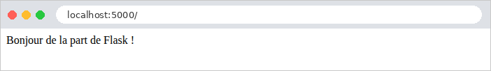
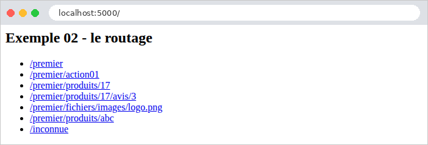
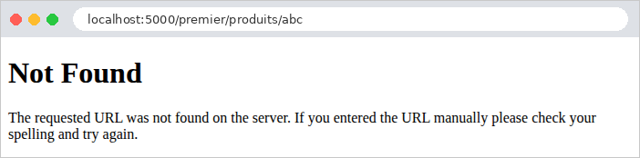
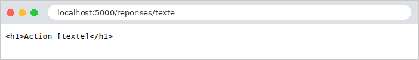
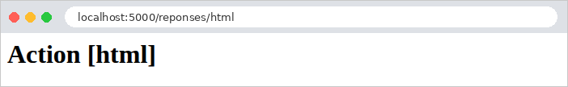
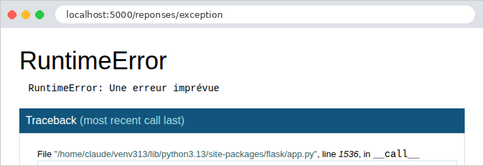
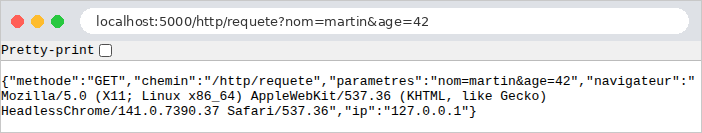

2. Actions, Routing, Responses
This chapter examines the path a request takes, from the browser to the action that processes it, and the response that action returns. Views will not be introduced until Chapter 4: here, actions return text or JSON directly.
2.1. Example 01: The Structure of a Flask Application
The first example is the smallest possible [Flask] application: a single file.
2.1.1. The file app.py
Let’s break down this code:
- line 2: imports the [Flask] class from the [flask] package, installed in the virtual environment by [pip]. In [Python], a file named [.py] is a module, and a module uses only the names it has imported or defined itself (aside from built-in language functions, such as [print] or [len]);
- Line 6: the application, an object of the [Flask] class. It receives requests and selects the function that processes each one. The parameter is the name of the current module, which [Python] stores in the variable [__name__]: [Flask] uses this to locate the application folder, where it will later search for the views (folder [templates]) and the static files (folder [static]);
- Line 10: [@app.get("/")] is a decorator. A decorator is written as [@expression], immediately before the definition of a function (or a class); [Python] calls the expression with the function as a parameter when it executes the definition. Here, [app.get("/")] registers the function [index] in the application: it will handle requests for [GET /]. This is routing. A function associated with a route in this way is an action (the [Flask] documentation refers to it as a view function; see the introduction);
- lines 11–13: the action returns a string. The value returned by an action is the response sent to the browser: [Flask] places it in the body of the HTTP response. By convention, function names ([Python]) are written in lowercase, with words separated by underscores ([action01_post]);
- line 17: when the file itself is executed ([python app.py]), [Python] assigns the value ["__main__"] to the variable [__name__]; when the module is imported by another module, it is set to the module’s name (["app"]). This test, which is very common in [Python], therefore reserves the rest of the code for when the file is launched directly;
- line 21: [app.run] starts the [Werkzeug] development server, which listens for requests on port 5000 of the machine (5000 is the default value) until it is stopped by [Ctrl-C]. [debug=True] enables debug mode: the server monitors the application files and restarts the application as soon as one is modified; an unhandled exception displays a debug page (see Example 03). This mode is intended for development, and development only: the debug page allows you to execute [Python] code on the server.
2.1.2. Execution
In a terminal window open to the [01-structure] folder, with the examples’ virtual environment enabled, type [python app.py]. [Flask] displays its startup messages:
The messages show the application name, debug mode, listening address, and port. [127.0.0.1] is the address of the machine itself ([localhost]): the server accepts only requests from this machine, which is suitable for development ([app.run(host="0.0.0.0")] would open it up to other machines on the network). The line [Restarting with stat] indicates the automatic reload mechanism: the process launched by [python app.py] simply monitors the files; it launches the application in a separate process, which it restarts whenever a change is made. "PIN" protects the [Python] console from the debug page.
There is a second way to launch an application: the [flask] command, installed along with [Flask] in the virtual environment:
The option [--app] specifies the application module ([app], i.e., the file [app.py]), [run] starts the development server, and [--debug] enables debug mode; [--port 5001] would change the port. The command itself locates, within the module, the object [Flask] named [app] (or, as we’ll see in Example 02, a function named [create_app]). With this, the [if __name__ == "__main__"] test is no longer needed. The examples use [python app.py], which is easier to remember; the case study will do the same.
Let’s request URL and [http://localhost:5000/] using a browser:

then with [curl]. The [-i] option also displays the HTTP headers from the response:
The first line of the response contains the protocol version, the status code (200), and its label ([OK]). This is followed by the headers: the server name, the date, the content type, the content length in bytes, and [Connection: close] (the development server closes the connection after each response). A blank line separates the headers from the body of the response. In the rest of this document, we will no longer include the headers [Server], [Date], and [Connection], as they do not change.
The header [Content-Type: text/html; charset=utf-8] indicates that the response is in the format HTML, whose characters are encoded in UTF-8. This is the default encoding ([Flask]) for any string returned by an action: the browser therefore interprets the string as HTML (here, without a tag, it is displayed as-is). Example 03 will show how to specify a different encoding type.
For each request, the server console displays a log line: the client’s address, the date, the request, and the response code.
2.2. Example 02: Routing
Routing associates a URL and a method (HTTP, GET, POST...) with an action. Example 02 organizes these actions into two files:
The [controllers] folder is a [Python] package (see introduction). Each of these two modules defines a blueprint: a group of routes, which the application then registers. This is the [Flask] equivalent of the controller classes in [Spring MVC] or [ASP.NET Core MVC].
2.2.1. The application: app.py
- Lines 4–5: Import the two blueprints, the objects [accueil] and [premier], from the modules [controllers/accueil.py] and [controllers/premier.py];
- Lines 9–14: The application is no longer a module variable created upon import; it is constructed by a function called a *factory*. This is the approach recommended by the [Flask] documentation, which all subsequent examples will follow: the application’s configuration is consolidated in a single location, and multiple applications with different configurations can be created (for testing, for example). The [flask --app app run] command recognizes this: in the absence of a [app] variable, it calls the [create_app] function from the module;
- lines 12–13: Each blueprint is registered in the application; its routes become those of the application;
- line 18: the application is built, then the server is started.
2.2.2. The "home" blueprint: controllers/accueil.py
- line 6: the blueprint. Its first parameter is its name, [accueil]: this will be used to identify its actions ([accueil.index], see Example 04). The second parameter, as with the application, is the module name;
- line 11: A blueprint has the same decorators as the application: the action [index] processes [GET /];
- lines 13–23: A string enclosed in triple quotes can span multiple lines and contain quotes. The action returns HTML, sent with the type [text/html] (see Example 01).
The action [index] thus returns a page HTML that contains links to the actions in the other blueprint:

2.2.3. The first blueprint: controllers/premier.py
Let’s break down this code:
- line 5: the parameter [url_prefix] sets the prefix common to all routes in the blueprint: its actions handle URL routes that begin with [/premier];
- Lines 9–10: The route [""] refers to the prefix itself: the action [index] handles [GET /premier]. The URL of an action is the concatenation of the blueprint’s prefix and the path of its route. The action name ([index]) may be the same as in another blueprint: [Flask] distinguishes them by the blueprint name ([premier.index], [accueil.index]);
- lines 15–16: the action [action01] processes [GET /premier/action01];
- lines 21–22: the same path, but for the method POST: the decorator [post] replaces [get]. There are also [put], [delete], and [patch], as well as the general decorator [route], which accepts a list of methods: [@premier.route("/action01", methods=["GET", "POST"])]. Within the same module, two functions cannot have the same name (the second would replace the first): hence the name [action01_post];
- Lines 28–30: [<int:id>] is a path variable: this segment of URL can take on multiple values. [int] is a converter: the segment must consist of digits; otherwise, the route does not match; its value is converted to an integer and then passed to the action’s parameter of the same name, [id]. For [/premier/produits/17], [id] is equal to the number 17. This is data binding (*data binding*), which the next chapter will examine in detail. Without a converter ([<id>]), the variable accepts any text without a slash and remains a string. [Werkzeug] also provides the converters [float], [uuid], and [path], and Example 12 will show how to write your own;
- Line 30: an f-string (the prefix [f]): each expression within curly braces is evaluated, and its value is inserted into the text;
- lines 34–36: two path variables, passed as two parameters to the action;
- lines 41–43: the [path] converter accepts any ending of URL, including [/].
2.2.4. Execution
Here are the responses to a few queries:
The text is 26 characters long, but the response is 28 bytes: in UTF-8, the character [°] takes up two bytes.
To send a request for POST, use the [-X POST] option of [curl]:
A HTTP method that is not handled by any action for this path results in a 405 error ([Method Not Allowed]). The [Allow] header lists the accepted methods; [Flask] adds [HEAD] (the same request as GET, without the response body) and [OPTIONS] (the list of accepted methods), which it processes itself for any route GET:
Finally, a URL that no route handles results in a 404 error. This is also the case for an identifier that is not an integer: no route matches [/premier/produits/abc].
The error responses for [Flask] (actually, for [Werkzeug]) are short pages named HTML, in English. In a browser:

Chapter 7 will show how to replace them with application-specific pages. Note also that [Flask] distinguishes [/premier] from [/premier/]: the latter, URL, also produces a 404 error, because no route ends with a forward slash. Conversely, a route declared with a trailing slash ([@premier.get("/liste/")]) also accepts URL without a slash, via a redirect.
The command [flask routes], run in the example folder, lists all the routes in the application:
The [Endpoint] column lists the name of each route: the blueprint name, a period, and the function name. The last route, [static], is created by [Flask] itself: it serves the files in the application’s [static] folder (see Example 15).
2.3. Example 03: Responses from an action
What an action returns determines the response HTTP. Example 03 reviews the main cases. The file [app.py]:
- Lines 11–12: two settings for the application’s JSON provider ([app.json]), the object that converts [Python] objects to JSON. By default, it writes non-ASCII characters as escape sequences ([créée] becomes [créée], which is valid JSON but not very readable), and it sorts dictionary keys alphabetically. We keep the characters as-is, and the keys in the order in which the action wrote them.
The file [controllers/reponses.py]:
Let’s comment on this code:
- Lines 13–15: The class [Response] represents a complete HTTP response. The action constructs it itself: the body and the type ([mimetype]), in this case [text/plain] (plain text). The browser will not interpret the tags;
- lines 19–21: the same string, rendered on its own: [Flask] sends it with the type [text/html], and the browser interprets it;
- lines 25–29: a dataclass—a class in which only the fields and their types are declared; the decorator [@dataclass] writes the constructor ([Personne("Martin", "Jean", 42)]), the textual representation, and the object comparison itself. Example 06 will revisit this;
- lines 33–35: the function [jsonify] converts its parameter to JSON and generates a response of type [application/json]. The provider JSON for [Flask] can convert dictionaries, lists, strings, numbers, Booleans, [None] (which becomes [null]), as well as dataclasses, dates, and numbers [Decimal] (see example 06);
- lines 39–41: even simpler: an action that returns a dictionary (or a list, lines 45–47) produces a response JSON, without calling [jsonify]. A dataclass, on the other hand, must go through [jsonify]: if returned on its own, it would cause an error (“The view function did not return a valid response”);
- lines 51–53: An action can return a tuple [(contenu, code)]: status code 201 ([Created]) replaces status code 200. A tuple can also contain headers: [(contenu, code, {"X-Exemple": "03"})];
- lines 57–59: code 204 ([No Content]) means “nothing to display”: the response has no body;
- lines 64–68: an asynchronous action, declared by [async def]. The keyword [await] suspends the coroutine while waiting ([asyncio.sleep]), without blocking the program. [Flask] executes the action in an event loop created for the request and waits for its result: this is useful for launching multiple waits in parallel (multiple calls to web services, for example), but it does not make [Flask] itself asynchronous. You must install the [[async]] extension of [Flask] (see [requirements.txt]);
- lines 72–74: an “expected” error: the tuple [(contenu, 404)] returns a 404 response ([Not Found]), with a body (JSON) chosen by the action;
- lines 78–80: the same error, generated by the function [abort]. [abort] returns nothing: it throws an exception ([NotFound], for the 404 code), which terminates the action; [Flask] converts it into an error response, with the message provided as the second parameter. This is the most common way to terminate an action due to an error, even deep within a function called by the action;
- lines 84–86: an “unexpected” error—an exception that no one handles—produces a 500 response ([Internal Server Error]).
In a browser, the difference between [text/plain] and [text/html] is visible:


Here are the responses for the other actions:
The dataclass has been converted to the object JSON, with one field per attribute. In debug mode, JSON is displayed on multiple lines, indented; without debug mode, it fits on a single line ([{"nom":"Martin","prenom":"Jean","age":42}]). The action [/reponses/dictionnaire] produces exactly the same output.
The response from [abort] is the standard error page for [Werkzeug], with our message (its apostrophe was escaped in [']: text inserted into HTML must not be able to introduce tags there; we’ll come back to this).
That leaves the unhandled exception. In debug mode, the browser displays the [Werkzeug] debugger page: the exception type and message, followed by the call stack (the list of functions that were executing at the time of the error), from oldest to most recent, with the relevant line of code for each:

The last function in the stack is our action, [exception], on line 86 of the file [reponses.py]. By clicking on one of the lines in the stack, you can even open a [Python] console in the context of that function, after entering the PIN displayed at startup: this is why debug mode should never be enabled on a server accessible to others. The server console also displays the call stack (we’ve included only the end here):
Without debug mode ([app.run(port=5000)]), the same request produces a brief 500 error page in English that reveals nothing about the code (“Internal Server Error. The server encountered an internal error and was unable to complete your request...”); the call stack is only written to the server console. Chapter 7 will show how to display an application-specific error page.
2.4. Example 04: Redirects
A redirect is a response that instructs the browser to fetch another URL: a 3xx code and the [Location] header, which contains the new address. The browser immediately sends a second request to that address. The [controllers/redirections.py] file:
- lines 8–10: The [redirect] function generates a redirect response to the specified address. The 301 status code ([Moved Permanently]) indicates that the page has permanently changed its address: the browser (and search engines) can cache the new one;
- lines 20–22: Without the [code] parameter, [redirect] produces a temporary redirect with a 302 status code ([Found]). The address is calculated by concatenating pieces of text, which poses a problem that we will examine;
- Lines 27–29: The function [url_for] generates the URL for an action, identified by its name (["redirections.page"]: the blueprint, a point, the function), rather than by its path. Its named parameters provide the path variables (here, [nom]), correctly encoded for a URL. If the path of the route [page] is ever changed, calls to [url_for] will automatically follow suit;
- lines 38–40: a redirect to another site.
The responses, using [curl] (which, without any options, does not follow redirects):
The response also includes a small body, HTML, for a client that would not follow redirects. The [-L] option of [curl] follows the redirect, just as a browser would:
Now let’s compare the two calculated redirects, with a destination that contains a question mark, encoded as [%3F] in URL (an uncoded [?] would start the parameters of the URL):
[Flask] decoded the path variable before processing it: [destination] equals [a?b]. The first action pastes it as-is into the address: [/page/a?b], which the browser interprets as the path [/page/a] followed by the parameter [b]. The second one goes through [url_for], which encodes it again: [/page/a%3Fb]. Following the redirects:
Only the second one leads to the correct page. Hence the rule: an address containing a variable value is generated using [url_for], never by concatenating strings. In the browser, only the final page is visible; the address bar displays the new URL:

Two other redirect codes exist: 303 ([See Other]) and 307 ([Temporary Redirect]), which are obtained via [redirect(url, code=303)]. After a POST request, codes 302 and 303 cause the browser to send a GET request to the new address, whereas 307 (and 308, the permanent version) cause it to repeat the POST request. Example 20 will use redirection following a POST.
2.5. Example 05: The Request and Response Objects
Until now, actions only received path variables and returned a value that [Flask] converted into a response. An action can also access the current request and construct the response itself. The file [controllers/http.py]:
- Line 4: Importing the [request] object. In [Flask], the current request is not a parameter of the action: it is a global object, [request], which is imported from the [flask] package. How can a global object refer to the current request, given that the server processes multiple requests simultaneously across multiple threads (parallel execution threads)? [request] acts as a proxy: each time it is used, it forwards the operation to the request in the current thread. [Flask] refers to this as the request context: while a request is being processed, [request] refers to that specific request. Outside of request processing, using it causes an error (“Working outside of request context”);
- lines 14–20: some properties of the request: its method HTTP, its path, its raw parameters (the part of URL that follows [?], in byte form, which [decode] converts to text), its headers ([request.headers], a dictionary, whose method [get] returns [None] for a missing header), the client’s address IP. The parameters, one by one, will be covered in the next chapter;
- lines 26–30: the function [make_response] constructs the response object (a [Response]) based on what the action would return (here, a string); the action can then modify it before returning it. A [X-Exemple] header is added to it (by convention, application-specific headers often begin with [X-]);
- lines 34–37: the “hand-built” response: the body, the status code, and the type;
- lines 42–50: a response sent in chunks (*streaming*). The function [morceaux] is a generator: each [yield] produces a chunk of the body. Since the response is built using a generator, its length is not known in advance: the server sends the status code and headers, then each chunk as soon as it is produced. This is useful for a very long response, generated bit by bit. But once the first chunk has been sent, the status code can no longer change: here, the generator throws an exception after the first chunk. This is the mistake to avoid: a response that has already begun cannot become an error response.
Responses:
(The quotation marks around "URL" prevent the terminal from interpreting the character "[&]".) In a browser, the [User-Agent] header is the browser's header; [Chrome] displays the raw JSON, with a checkbox that indents it:

The header [Transfer-Encoding: chunked] replaces [Content-Length]: the body arrives in chunks, each preceded by its length. After one second, the response stops: [curl] received a 200 status code and a truncated body, with no way of knowing that an error occurred. Only the server console indicates this:
2.6. Example 06: Shared Services and Dependency Injection
An action should not contain the application logic itself; it delegates it to services—objects that know how to perform a specific task (read products, calculate a shopping cart, etc.). Multiple actions often use the same service. In [Spring] or [ASP.NET Core], a dependency injection container creates the services and automatically provides them to those that need them. [Flask] does not have a container: the application factory creates the services, and the actions request them from the application. Example 06 organizes its code by domain (products, customers) rather than by type (controllers, models):
2.6.1. The Product
- Line 8: a dataclass (see Example 03). With [frozen=True], the object is immutable: its fields are set by the constructor, and any attempt to modify them ([p.prix = 2]) throws an exception. An immutable object can be safely shared across multiple requests;
- Lines 10–12: the fields, along with their types. Types are not checked by [Python] at runtime: they are annotations read by analysis tools (such as the one in [Visual Studio Code]) and certain libraries ([Pydantic], discussed in the next chapter). The price is a [Decimal], an exact decimal number: a [float] cannot accurately represent 0.1 or 3.2 (in binary, these numbers have an infinite number of digits), and a sum of prices in [float] may result in 5.500000000000001.
2.6.2. The service contract: service.py
- Lines 11–18: the service contract—what it can do, without specifying how. In [Python], a contract is defined by an abstract class: a class that inherits from [ABC] ([Abstract Base Class]), and whose methods marked [@abstractmethod] have no body (the three dots [...] serve as an empty body). You cannot create an object of this class; a subclass must override all of its abstract methods. This is equivalent to the interfaces [Java] and [C#];
- line 14: the annotation for the type returned by the method (after [->]): a list of products. [self] is the object on which the method is called (the equivalent of [this] in [Java]), always listed as the first parameter;
- line 18: [Produit | None]: a product, or [None] if it does not exist;
- Lines 23–24: The function that provides the service to the actions. [current_app] is, like [request], a proxy: it refers to the application that processes the current request. [app.extensions] is a dictionary that [Flask] makes available to extensions (the libraries that are added to [Flask]) so they can store their objects there; we use it for our own services. The function also specifies the service type ([-> ProduitsService]): [Visual Studio Code] can then offer its methods.
2.6.3. The implementation: service_memoire.py
- line 8: the class inherits the contract and redefines its two methods;
- lines 10–15: [__init__] is the class’s constructor. It stores the products in the object’s [_produits] attribute; the leading underscore indicates, by convention, a private attribute that code outside the class should not use. The products are in a tuple (enclosed in parentheses): an immutable sequence. The price is constructed from a string ([Decimal("1.5")]): built from [float] 1.5, it would inherit its inaccuracies;
- lines 18–19: The method returns a new list, a copy of the tuple: the caller can modify it without affecting the service’s data;
- lines 21–23: [(p for p in self._produits if p.id == id)] is a generator expression: it produces, one by one, the products whose ID matches the requested one. [next] returns the first product element, or the default value, [None], if there are none.
2.6.4. The product blueprint: controller.py
- Line 4: The blueprint knows only the service contract (the [service] module), not its implementation: it is unaware that the products are in memory;
- Lines 10–12: The action requests the service from the application, then delegates the work to it. [jsonify] converts the list of dataclasses into an array JSON;
- lines 16–20: an unknown product returns a 404 response, with a message in JSON.
2.6.5. The client blueprint: controller.py
- lines 14–17: the contents of the shopping cart, rendered as JSON;
- line 22: this blueprint uses the same service as the products blueprint: a single, shared object;
- line 24: [sum] sums the elements of an iterable; its parameter [start] is the initial value of the sum (0 by default). Starting with [Decimal(0)] rather than the integer 0 is not essential (an integer and a [Decimal] add together), but it guarantees a result of [Decimal] even for an empty shopping cart.
2.6.6. The service declaration: app.py
- Line 17: This is where—and only here—the service implementation is chosen. The service is created once, at startup, and the same object handles all requests from all users: it is a singleton (the default scope for [Spring] beans). To switch to an implementation that reads from a database, you would simply need to change this line: the blueprints, which only know the contract, would remain unchanged. This is the whole point of dependency injection, even when implemented “by hand”: every part of the application depends on contracts, and a single location determines the implementations.
A service shared by all requests must be able to handle being used simultaneously by multiple requests: the development server processes each request on its own thread. This poses no problem: it simply reads data that never changes. Example 20 will show a service whose data changes, and the precautions this requires.
2.6.7. Execution
The prices have become strings (["1.5"]): JSON has only a numeric type, which most programs interpret as a floating-point number; so the provider JSON for [Flask] converts a [Decimal] to a string to preserve its precision.